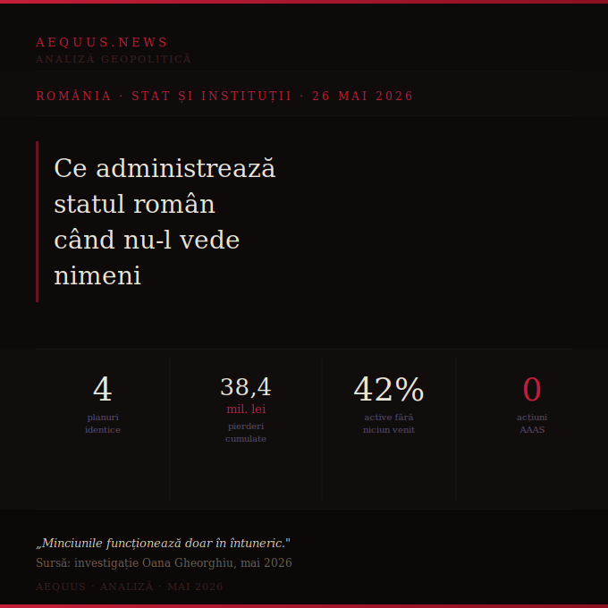

Patru companii de stat, patru planuri de restructurare identice — copiate cuvânt cu cuvânt. Pierderi cumulate de 38,4 milioane de lei. Un acționar majoritar care nu a făcut nimic. O investigație care arată cum arată statul capturat în documente oficiale.

Oana Gheorghiu a analizat patru planuri de restructurare avizate de Autoritatea pentru Administrarea Activelor Statului în martie 2026. Ce a găsit nu e o anomalie — e un sistem.
Cele patru companii analizate sunt radical diferite: una vinde spații comerciale în Alexandria, alta deține active radioactive în Ilfov, alta are proprietăți blocate în Botoșani și Arad, alta controlează 83 de milioane de lei în terenuri lângă Craiova. Planurile lor de restructurare sunt textual identice — aceleași fraze, același template, același document copiat de patru ori.
Un plan de restructurare identic pentru active radioactive și spații comerciale nu e un plan. E o hârtie care bifează o obligație legală fără să o îndeplinească. AAAS a avizat-o oficial.
AAAS e acționarul unic sau majoritar în sute de companii de stat. În niciunul din cele patru planuri analizate nu apare o inițiativă venită din partea sa: nicio convocare a adunării generale pentru restructurare forțată, nicio înlocuire de management, nicio acțiune în instanță.
La Radioactiv Mineral Măgurele — companie cu pierderi cumulate de 3,9 milioane de lei și venituri în scădere cu 38% — obiectul de activitate e fizic imposibil de exercitat în condițiile actuale. Planul proiectează profit de 490.000 de lei pe an începând din 2026. Nu există nicio măsură structurală care să explice această inversare.
La Active Conexe SA — fosta platformă Ford Craiova — 42% din imobilele evaluate la 100 de milioane de lei generează costuri fără să producă venituri. AAAS nu a impus niciun calendar de valorificare. Planul previzionează dublarea profitului timp de patru ani consecutivi.
Sursa datelor: investigație Oana Gheorghiu, mai 2026
Două din cele patru companii au în consiliul de administrație membri provizorii — în condițiile în care prin PNRR România s-a angajat la eliminarea interimatelor. Membrii interimari au legături politice documentate și cumulează funcții publice cu mandate în consilii peste limitele legale. La Active Conexe SA, numirea s-a făcut pentru un consiliu de 5 membri, deși legislația prevede 3.
Investigația Gheorghiu nu e un caz izolat — e portretul instituțional al unui stat în care acționarul public nu acționează, managementul nu răspunde și documentele oficiale sunt formulare completate mecanic. Un stat în care 38,4 milioane de lei în pierderi cumulate și 100 de milioane în active nevalorificaTE sunt acoperite de hârtii avizate și arhivate.
Acest tip de stat are nevoie, pentru a funcționa, de un guvern care nu deranjează. Azi știm și cine vine să-l conducă.